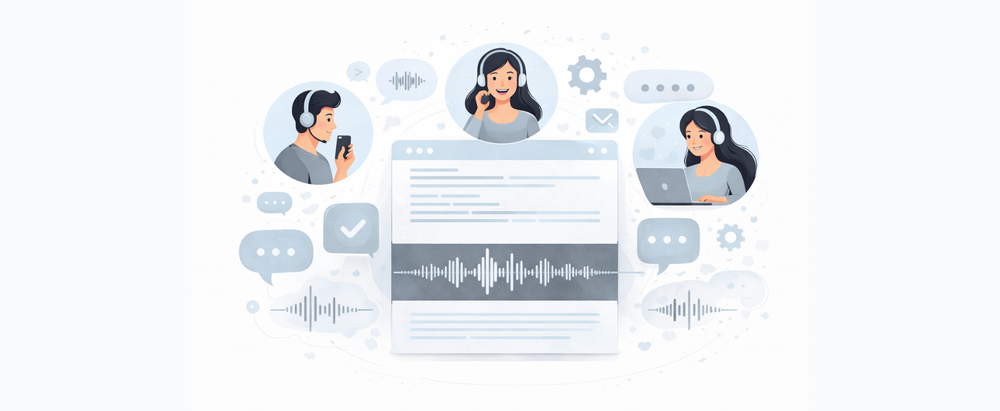

Speech-to-Text Analytics for Call Centers
1. Problem Definition / Objective
This project focuses on extracting actionable insights from large volumes of call center conversations between customer service agents and clients. By combining speech recognition and natural language processing techniques, the solution transforms raw audio data into structured information to analyze customer interactions and evaluate agent performance.
- Convert unstructured call audio into text data
- Identify common call topics and patterns
- Measure agent performance and level of attention during customer interactions
2. Data Available
- Audio recordings of inbound and outbound calls between call center agents and customers
3. Solution Development
An automated pipeline was developed to process call recordings end-to-end. Audio files are sent to the Google Cloud Speech-to-Text API for transcription. The resulting text is then encoded into numerical representations using Transformer-based text embeddings. These embeddings feed a clustering model that groups semantically similar calls, enabling topic discovery, call categorization, and agent behavior analysis.
4. Tools and Technologies
- Python
- Google Cloud Speech-to-Text API
- Transformer Models for Text Embeddings
- Unsupervised Clustering Algorithms
5. Business Impact
- Improved visibility into customer needs and recurring issues
- Scalable analysis of thousands of calls without manual review
- Data-driven insights to monitor and improve agent performance